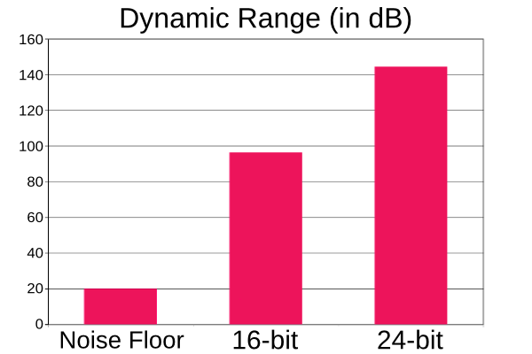

Updated: Wed, 2014-08-13 16:57
Digital distortion is what happens when a signal goes above 0dBFS. Audio cannot be represented above this point and will distort. Digital distortion is particularly harsh sounding.
Updated: Tue, 2014-08-19 10:24
Bit depth relates to how many bits of information there are per sample. In laymans terms this equates to how many levels of loudness a digital waveform can have. 16 bit has 65,536 possible levels of loudness while 24bit has 16,777,216 possible levels. 24bit is often used in recording as it has a much larger dynamic range/lower noise floor. This is not an issue for playback systems though, so 16 bit is perfectly acceptable there, eg. CD quality uses 16bit.

Updated: Wed, 2014-08-13 15:34
Sample rate refers to how many samples per second are in an audio signal or file. CD quality uses a sample rate of 44.1kHz, or 44,100 samples per second. Audio interfaces use different sample rates but common ones are 44.1kHz, 48kHz and 96kHz.
Updated: Tue, 2014-08-19 07:09
A DAW, which stand for Digital Audio Workstation, is software used for the recording, editing and mixing of digital audio. DAW's started off as integrated hardware units but nowadays, a DAW most commonly refers to recording software.
DAW's follow many conventions from hardware recording set ups. You even have a virtual mixer console and can route audio similarly to hardware set ups. You can also process individual audio tracks using plugins such as EQ, compressors and reverbs.
Updated: Fri, 2014-11-14 13:54
Due to Linux audio's flexibility, very modular set ups are possible. Session management makes this easy by remembering software and their connections. You can launch various programs, connect them up and have you session manager remember, and later, relaunch the whole session, connections included. Some popular session management tools include Non Session Manager (NSM), Ladish and Jack session.
Updated: Tue, 2014-08-19 09:40
Phantom power is a 48v power supply used to power certain microphones (condenser), active DI boxes, etc. Most preamps/audio interfaces will include an on/off switch for this.
Updated: Tue, 2015-01-27 11:50
A digital to analog converter converts a digital signal to an audio signal. A simple example of this is the speaker out on your computers soundcard. A soundcard that has both A to D and D to A converters can be used to send audio to an outboard unit, eg. A reverb unit, and to send it back into the computer again (see inserts).
Updated: Tue, 2014-08-19 07:04
Soundcards have two main stages, preamp and an analog to digital conversion stage. The preamp boosts the signal and the A to D stage converts that usable signal into the digital domain, which the computer can then process. Some soundcards come with only analog to digital converts, eg. Delta 1010, some RME interfaces, etc. These require external preamps.
Pages